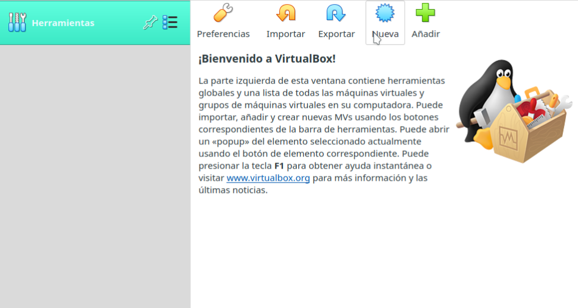
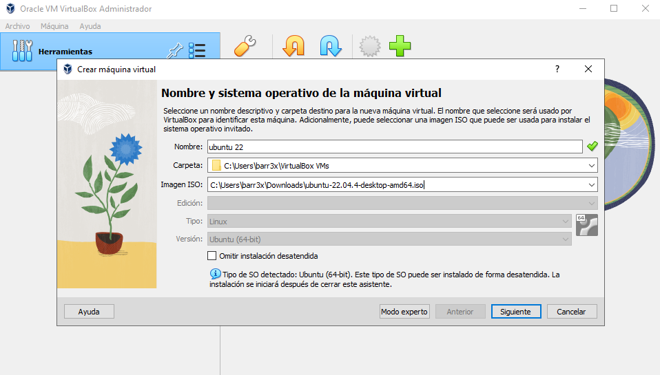
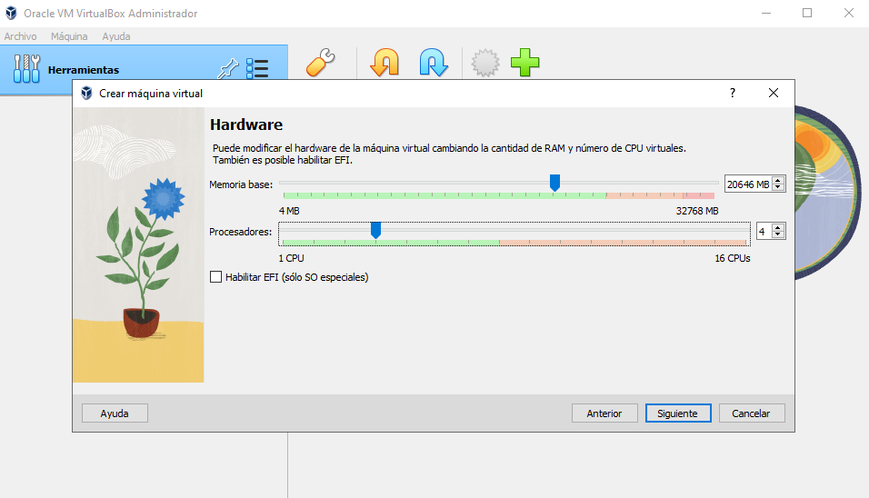
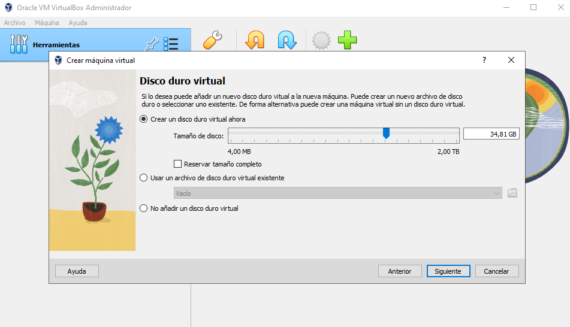
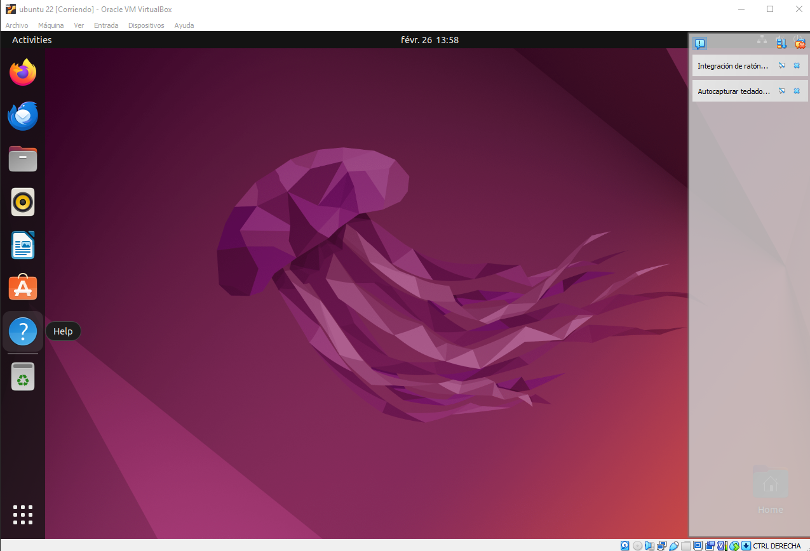

¿Que es Ubuntu?
Ubuntu es un popular sistema operativo gratuito y de código abierto basado en Linux que puedes utilizar en un ordenador o en un servidor privado virtual.
Instalacion de Ubuntu
Ubuntu lo podemos descargar de su página oficial. Aquí podremos encontrar diferentes versiones. lo recomendable será instalar la versión 20.04 LTS, la cual podrás descargar desde aquí . Se descargará un archivo ISO de 2.8GB el cual posteriormente usaremos en la instalación.
Creación de la Máquina Virtual
Una vez instalado e iniciado VirtualBox, crearemos la máquina virtual pulsando el icono de «Nueva».
Paso 1:VirtualBox nos pedirá que introduzcamos el nombre de la máquina virtual junto con el tipo y la versión que vayamos a usar. En este caso el tipo será «Linux» y la versión será «Ubuntu (64-bit)». El nombre puedes introducir el que quieras. Este será el que te permita identificar tu máquina virtual en caso de tener más de una. Además de esto, te permite introducir la carpeta donde alojar los archivos de la máquina virtual. Puedes elegir la carpeta que quieras, en mi caso he dejado la que nos indica VirtualBox por defecto.
Paso 2:En el siguiente paso, debemos indicarle la memoria principal (RAM) que tendrá nuestra máquina virtual. En este caso Ubuntu recomienda escoger un tamaño mínimo de 2048MB (2GB) para sistemas virtualizados para que todo funcione correctamente.
Paso 3:VirtualBox nos pedirá como configurar el disco duro. En este caso crearemos un disco virtual. El resultado de este paso será creación de un archivo que simulará el disco duro de tu máquina virtual.
Paso 4:En este punto ya tenemos creada nuestra máquina virtual con las opciones seleccionadas en los pasos anteriores. Empezamos con la instalacion del sistema operativo.

Paso 5:Una vez llegado a este punto, ya tendrás la máquina virtual completamente funcional.
 Regresar